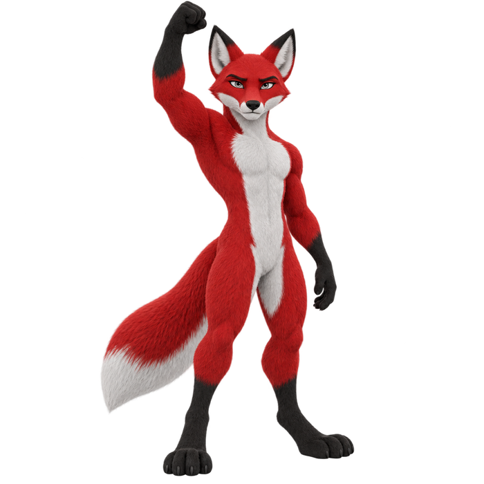
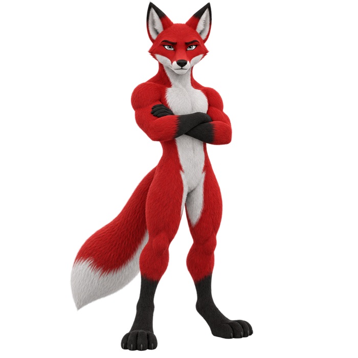

Antes de reservar sua semana para um concurso policial, confira o documento que já existe.
Encontre a página oficial da seleção.
Anote o órgão, a organizadora (quando já estiver definida), o endereço consultado e a data da consulta.
Dê o nome certo à etapa confirmada.
Autorização, escolha da banca e edital de abertura informam coisas diferentes. Registre só a etapa que o documento consultado comprova.
Separe o que sabe do que falta verificar.
Cargo, requisitos, prazos e local de prova só entram na primeira coluna quando a fonte consultada trouxer esses dados.
Escolha uma ação que caiba na etapa atual.
Com edital aberto, confira as exigências do cargo e os prazos que afetam você. Antes dele, mantenha uma tarefa de estudo ligada ao seu objetivo e marque um horário para buscar atualizações.
Três passos para hoje

Aumento de 20% e desconto de 20% não devolvem o valor inicial.
Veja a conta que explica a diferença.
O aumento parte do valor inicial.
O desconto parte do novo valor.
Multiplique os fatores.
O resultado corresponde a 96% do valor inicial: uma redução de 4%.
Faça outro cálculo para testar.
A razão final continua 0,96.
Na próxima questão, escreva a base de cada porcentagem.
Quem traça a Rota, nunca perde o alvo!
Havia vagas. Existiam vagas.
A troca do verbo muda a concordância.
Haver no sentido de existir é impessoal.
Nesse uso, o verbo fica na terceira pessoa do singular. “Vagas” não funciona como sujeito de “haver” nessa frase.
Existir concorda com o sujeito.
Em “Existiam vagas no curso”, “vagas” é o sujeito plural e o verbo acompanha esse plural.
A impessoalidade alcança o auxiliar.
Quando haver é impessoal, o auxiliar da locução fica no singular. Com existir, a locução concorda com o sujeito plural.
Antes de aplicar a regra, confira o sentido.
Em “Eles haviam estudado”, haver atua como auxiliar de uma forma verbal composta, com sujeito plural. Essa situação difere do haver existencial.
Na revisão, compare:
Agenda pronta. Cores escolhidas. Nome do arquivo perfeito.
A primeira tarefa ainda está esperando.
Você sentou para estudar e começou a organizar.
Separou os materiais, mudou a ordem das abas e refez o título da planilha. Quando percebeu, o período reservado acabou e a atividade continua sem uma tentativa.
Deixe a organização no tamanho da tarefa.
Para resolver um bloco curto, isso pode bastar para começar. Se falta um material essencial, procure esse material.
Faça a primeira aplicação com o que já está pronto.
Depois de concluir uma tentativa, você pode descobrir uma mudança útil no registro. Talvez falte espaço para a causa do erro, por exemplo.
Guarde uma melhoria para outro momento.
Anote a ideia e volte à correção. Ao terminar a tarefa, avalie quando fazer o ajuste.
Deixe o arquivo com o nome que já está.
